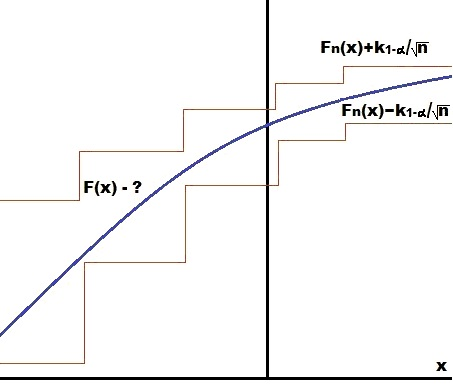

Пример 13.14:
Пример 13.15:
Пусть $H_1,\ldots,H_s$, $s$ независимых выборок объёма $n_1,\ldots,n_s$ соответственно.
Каждый элемент выборки может обладать одним из $r$ признаков $E_1,\ldots,E_r$.
Для любого $i\in\overline{1,r}$, $j\in\overline{1,s}$ обозначим $p_{i,j}$ вероятность того, что элемент выборки $H_j$ обладает признаом $E_i$.
Построим критерий для проверки гипотезы
$$H_0:\forall{i}\in\overline{1,s}\,\forall{j,k}\in\overline{1,r}(p_{i,j}=p_{i,k}).$$
Для любых $i\in\overline{1,r}$, $j\in\overline{1,s}$ обозначим $\nu_{i,j}$ - число элементов выборки $H_j$ обладающих признаком $E_i$.
Для любого $j\in\overline{1,s}$ рассмотрим статсистику $\chi_j^2$
$$\chi_j^2:=\sum_{i=1}^r\frac{(\nu_{i,j}-n_jp_{i,j})^2}{n_jp_{i,j}}.$$
Обозначим $n:=\sum_{j=1}^sn_j$ и при верной $H_0$ для любого $i\in\overline{1,r}$ $p_i:=p_{i,j}$ где $j\in\overline{1,s}$. Тогда $\sum_{i=1}^rp_i=1$,
следовательно, общее число оцениваемых параметров $m=r-1$.
Оценим параметры $p_1,\ldots,p_{r-1}$ видоизмененным методом $\chi^2$ (замечание 12.3).
Согласно видоизмененному методу $\chi^2$ оценки находятся как решение системы уравнений
$$\left\{\sum_{j=1}^s\sum_{i=1}^r\frac{\nu_{i,j}}{p_i}\frac{\partial{p}_i}{\partial{p}_l}=0,\,l\in\overline{1,r-1}\right..$$
Аналогично тому как это сделано в замечании 12.3 имеем
$$\frac{\partial{p}_i}{\partial{p}_l}=\begin{cases}0, & i\neq{l} \\ 1, & i\neq{l},i\neq{r} \\ -1, & i=r\end{cases},$$
тогда система приводится к виду
$$\left\{\sum_{j=1}^s\left(\frac{\nu_{l,j}}{p_l}-\frac{\nu_{r,j}}{p_r}\right)=0,\,l\in\overline{1,r-1}\right.$$
Обозначив $\nu_{l\cdot}:=\sum_{j=1}^s\nu_{l,j}$ получим
$$
\left\{\frac{l\cdot}{p_l}-\frac{\nu_{r\cdot}}{p_r}=0,\,l\in\overline{1,r-1}\right.\Rightarrow\left\{c:=\frac{\nu_{r\cdot}}{p_r}=\frac{\nu_{l\cdot}}{p_l},\,l\in\overline{1,r-1}\right.\Rightarrow
\forall{l\in\overline{1,r}}\,(\nu_{l\cdot}=cp_l).
$$
Так как $\sum_{l=1}^r\nu_{l\cdot}=\sum_{j=1}^sn_j=n$ и $\sum_{l=1}^rp_l=1$, то $c=n$,
следовательно, для любого $l\in\overline{1,r}$ в качестве оценки параметра $p_l$ берем $\nu_{l\cdot}/n$.
Тогда по теореме Пирсона (теорема 12.7)
$$\chi^2:=\sum_{j=1}^s\chi_j^2=\sum_{j=1}^s\sum_{i=1}^r\frac{(\nu_{i,j}-n_j\nu_{i\cdot}/n)^2}{\nu_{i\cdot}}\xrightarrow[n\to\infty]{d}\chi_{(r-1)(s-1)}^2.$$
Таким образом, критерий для оценки гипотезы $H_0$ выглядит следующим образом
$$\begin{cases}\chi^2\leq{c}\Rightarrow{H}_0 \\ \chi^2>c\Rightarrow\overline{H}_0\end{cases}$$
где при известной ошибке первого рода $\alpha$ значение $c$ находится по таблицам распределения $\chi_{(r-1)(s-1)}^2$
Лемма 13.2: Пусть $F(x)$ функция (возрастающая?) распределения непрерывной случайной величины $\xi$, $(x_1,\dots,x_n)$ - выборка над случайной величиной $\xi$, $(x_{(1)},\ldots,x_{(n)})$ - вариационный ряд этой выборки, $F_n(x)$ - эмприческая функция распределения случайной величины $\xi$ (см. определение 11.3). Тогда распределение статистики $$\mathcal{D}_n:=\sup_x|F_n(x)-F(x)|,$$ не зависит от вида функции $F(x)$.
Доказательство:
При доказательстве п. 2 утверждения 12.1 было показано, что $\eta:=F(\xi)\sim{R}[0,1]$.
Положим $y:=F(x)$ и для любого $i\in\overline{1,n}$ $y_i:=F(x_i)$ наблюдения над случайной величиной $\eta$.
Так как функция $F(x)$ неубывает, то совокупность $(y_{(1)}:=F(x_{(1)}),\ldots,y_{(n)}:=F(x_{n}))$ будет вариационным рядом построенным по выборке $y_1,\ldots,y_n$.
Тогда
$$\mathcal{D}_n=\sup_x|F_n(x)-F(x)|=\sum_{0<y<1}|F_n(F^{-1}(y))-y|,$$
где в силу возрастания функции $F(x)$
$$
G_n(y):=F_n(F^{-1}(y))=\frac1{n}\sum_{k=1}^ne(F^{-1}(y)-x_{(k)})=\frac1{n}\sum_{k=1}^ne(F(F^{-1}(y))-F(x_{(k)}))=\frac1{n}\sum_{k=1}^ne(y-y_{(k)}).
$$
Таким образом
$$\mathcal{D}_n=\sup_{0<y<1}|G_n(y)-y|,$$
где $G_n(y)$ - эмпирическая функция распределения для равномерного распределения.
Теорема 13.1: Колмогоров.
$$P\{\sqrt{n}\mathcal{D}_n<z\}\xrightarrow[n\to\infty]{d}K(z).$$
Доказательство:
Доказательство, например, в Ширяев А. Н. 2004 г. "Вероятность - 1" стр. 520.
Замечание 13.3:
Пусть $F_{\xi}(x)$ функция распределения случайной величины $\xi$,
тогда теорема 12.1 позволяет построить критерий для проверки гипотезы $H_0$: $F_{\xi}(x)=F(x)$.
Действительно, положим
$$\begin{cases}\mathcal{D}_n<c\Rightarrow{H}_0 \\ \mathcal{D}_n\geq{c}\Rightarrow\overline{H}_0\end{cases},$$
тогда при известной ошибке первого рода значение $c$ можно определить по таблицам распределения $K(z)$.
Замечание 13.4: Доверительная область для неизвестной функции распределения
Пусть $(x_1,\ldots,x_n)$ выборка над случайной величиной $\xi$ с неизвестной функцией распределения $F(x)$.
Обозначим $k_{1-\alpha}$ квантиль уровня $1-\alpha$ для распределения $K(z)$,
тогда по теореме 12.1
\begin{multline*}
P\{\sqrt{n}\mathcal{D}_n<k_{1-\alpha}\}=1-\alpha\Rightarrow{P}\{\sqrt{n}\sup_x|F_n(x)-F(x)|<k_{1-\alpha}\}=
1-\alpha\Rightarrow\forall{x}\in\mathbb{R}(P\{|F_n(x)-F(x)|<k_{1-\alpha}/\sqrt{n}\}=1-\alpha)\Rightarrow\\\Rightarrow
\forall{x}\in\mathbb{R}(P\{F_n(x)-k_{1-\alpha}/\sqrt{n}<F(x)<F_n(x)+k_{1-\alpha}/\sqrt{n}\}=1-\alpha)
\end{multline*}
Таким образом, построена доверительная область,
которая с заданной вероятностью $1-\alpha$ содержит значения функции распределения $F(x)$ для любого $x\in\mathbb{R}$.

Теорема 13.2: Пусть $\xi$ случайная величина с плотностью распределения $p(x)$. Согласно гипотезе $H_0$ - $p(x)=p_0(x)$, согласно гипотезе $H_1$ - $p(x)=p_1(x)$, где $p_0(x)$ и $p_1(x)$ различны на множестве более мощном чем множество меры нуль. Дана последовательность $\{x_i\}$ из $\mathbb{R}$ и константы $A,B\in\mathbb{R}$ такие, что $0<A<B$. Для различения гипотез используем следующий процесс:
Доказательство:
Утверждение теоремы эквивалентно утверждению
$$P\{\nu=\infty\}:=\lim_{n\to\infty}P\{\nu>n\}=0.$$
Так как $\{\nu>n+1\}\subset\{\nu>n\}$, то $P\{\nu>n+1\}\leq{P}\{\nu>n\}$, следовательно, $P\{\nu>n\}$ невозрастающая ограниченная снизу последовательность,
тогда по п. 2 теоремы 4.3.2 MA предел $\lim_{n\to\infty}P\{\nu>n\}$ существует,
докажем, что он равен нулю.
По утверждению 4.4.4 MA достаточно показать, что существует $m\in\mathbb{N}$
что $\lim_{k\to\infty}P\{\nu>km\}=0$.
Для любого $i\in\mathbb{N}$ обозначим
$$\xi_i:=\ln\frac{p_1(x_i)}{p_0(x_i)},$$
тогда
\begin{multline*}
P\{\nu>km\}=P\{\ln{A}\leq\xi_1\leq\ln{B},\ln{A}\leq\xi_1+\xi_2\leq\ln{B},\ldots,\ln{A}\leq\xi_1+\cdots+\xi_{km}\leq\ln{B}\}\leq\\\leq
{P}\left\{\ln{A}\leq\sum_{i=1}^m\xi_i\leq\ln{B},\ln{A}\leq\sum_{i=1}^m\xi_i+\sum_{i=m+1}^{2m}\xi_i\leq\ln{B},\cdots,\ln{A}\leq
\sum_{j=1}^k\sum_{i=(k-1)m+1}^{km}\xi_{(k-1)j+i}\leq\ln{B}\right\}.
\end{multline*}
Для любого $j\in\overline{1,k}$ обозначим
$$\eta_j:=\sum_{i=(k-1)m+1}^{km}\xi_i,$$
тогда
$$
P\{\nu>km\}\leq{P}\{\ln{A}\leq\eta_1\leq\ln{B},\ln{A}\leq\eta_1+\eta_2\leq\ln{B},\ldots,\ln{A}\leq\eta_1+\cdots+\eta_k\leq\ln{B}\}.
$$
Положим $c:=|\ln{A}|+|\ln{B}|$, тогда
$$
\ln{A}\leq\eta_1\leq\ln{B}\Rightarrow-|\ln{A}|-|\ln{B}|\leq\eta_1\leq|\ln{A}|+|\ln{B}|\Rightarrow|\eta_1|\leq|\ln{A}|+|\ln{B}|=c
$$
$$
\begin{cases}\ln{A}\leq\eta_1 & \leq\ln{B} \\ \ln{A}\leq\eta_1+\eta_2&\leq\ln{B}\end{cases}\Rightarrow
\begin{cases}\eta_2\geq\ln{A}-\ln{B} \\ \eta_2\leq\ln{B}-\ln{A}\end{cases}\Rightarrow
|\eta_2|\leq|\ln{B}-\ln{A}|\leq|\ln{A}|+|\ln{B}|=c.
$$
Аналогичным образом для любого $i\in\overline{2,k-1}$ показывается, что
$$\begin{cases}\ln{A}\leq\eta_1+\cdots+\eta_i & \leq\ln{B} \\ \ln{A}\leq\eta_1+\cdots+\eta_i+\eta_{i+1} & \leq\ln{B}\end{cases}\Rightarrow|\eta_i|\leq{c},$$
следовательно,
$$P\{\nu>km\}\leq{P}\{|\eta_1|\leq{c},\ldots,|\eta_k|\leq{c}\}.$$
Так как случайные величины $\xi_1,\cdots,\xi_{km}$ независимы и одинаково распределены (?),
то случайные величины $\eta_1,\ldots,\eta_k$ так же независимы и одинаково распределены, тогда
$$P\{\nu>km\}\leq\prod_{i=1}^kP\{|\eta_i|\leq{c}\}=P^k\{|\eta_1|\leq{c}\}.$$
Покажем, что существует $m\in\mathbb{N}$ такое, что $P\{|\eta_1|\leq{c}\}<1$.
По п. 6 теоремы 4.20 $D\eta_1=D(\xi_1+\cdots+\xi_m)=mD\xi_1$. Предположим, что $D\xi_1=0$,
тогда по п. 4 теоремы 4.20
$$
\xi_1=E\xi_1(P_{\text{пн}})\Rightarrow{p}_0(x)\exp{E\xi_1}=p_1(x)(P_{\text{пн}})\Rightarrow
\exp{E\xi_1}\int\limits_{-\infty}^{\infty}p_0(x)dx=\int\limits_{-\infty}^{\infty}p_1(x)dx=1\Rightarrow\exp{E\xi_1}=1\Rightarrow{p}_0(x)=p_1(x)(P_{\text{пн}}),
$$
а это противоречит условию. Следовательно, $D\xi_1>0$, тогда существует натуральное $m$ такое, что $D\eta_1=mD\xi_1>4c^2$.
Предположим, что при этом $P\{|\eta_1|\leq{c}\}=1$. Обозначим через $p_{\eta}(x)$ плотность распределения случайной величины $\eta_1$, тогда
$$
P\{|\eta_1|\leq{c}\}\Rightarrow{P}\{-c\leq\eta_1\leq{c}\}\Rightarrow-c\leq{E}\eta_1\leq{c}\Rightarrow
\forall{x}\in[-c,c](|x-E\eta_1|\leq|x|+|E\eta_1|\leq2c)\Rightarrow
{D}\eta_1=\int\limits_{-c}^c(x-E\eta_1)^2p_{\eta}(x)dx\leq4c^2\int\limits_{-c}^cp_{\eta}(x)dx\leq4c^2,
$$
что противоречит выбору $m$.
Следовательно, при $\eta_1=\xi_1+\cdots+\xi_m$
$$\lim_{k\to\infty}P\{\nu>km\}\leq\lim_{k\to\infty}P^k\{|\eta_1|\leq{c}\}=0.$$
Следствие 13.1: В условиях теоремы 13.2 $$E\nu<\infty.$$
Доказательство:
Докажем, что сходится ряд $\sum_{n=1}^{\infty}P(\nu>n)$. Выберем $m\in\mathbb{N}$ так же как это делалось при доказательстве
теоремы 13.2, тогда в обозначениях теоремы 13.2 имеем
$$
\forall{n}\in\mathbb{N}(P\{\nu>n+1\}\leq{P}(\nu>n))\Rightarrow\sum_{k=m}^{\infty}P\{\nu>n\}\leq\sum_{k=1}^{\infty}mP\{\nu>km\}=
m\sum_{k=1}^{\infty}P\{\nu>km\}\leq{m}\sum_{k=1}^{\infty}P^k\{|\eta_1|\leq{c}\}<\infty
$$
Таким образом, ряд $\sum_{n=1}^{\infty}P\{\nu>n\}$ сходится по п. 1
теоремы 7.1.1 MA так как сходится его $m$-тый остаток,
но этот ряд в свою очередь является перестановкой и группировкой членов ряда представляющего $E\nu$. Действительно
$$
E\nu:=\sum_{n=1}^{\infty}nP\{\nu=n\}=\sum_{k=1}^{\infty}\sum_{n=k}^{\infty}P\{\nu=n\}=1+\sum_{n=1}^{\infty}P\{\nu>n\},
$$
следовательно, $E\nu<\infty$ по теореме 7.3.1 MA и
следствию 7.2.1 MA.
Следствие 13.2: Тождество Вальда.
В обозначениях теоремы 13.2
$$E\sum_{i=1}^{\nu}\xi_i=E\nu{E}\xi_1.$$
Доказательство:
Для любого $k\in\mathbb{N}$ положим
$$\eta_k:=\begin{cases}1, & k\leq\nu \\ 0, & k>\nu\end{cases},$$
тогда $\eta_k$ зависит от $\xi_1,\ldots,\xi_{k-1}$ и не зависит от $\xi_i$ при $i\geq{k}$, тогда
$$
E\sum_{k=1}^{\nu}\xi_k=E\sum_{k=1}^{\infty}\xi_k\eta_k=\sum_{k=1}^{\infty}E(\xi_k\eta_k)=E\xi_1\sum_{k=1}^{\infty}E\eta_k=
E\xi_1\sum_{k=1}^{\infty}P\{\eta_k=1\}=E\xi_1\sum_{k=1}^{\infty}\sum_{i=k}^{\infty}P\{\nu=i\}=E\xi_1\sum_{n=1}^{\infty}nP\{\nu=n\}=E\xi_1E\nu
$$
Теорема 13.3: Пусть в условиях теоремы 13.2 $\alpha:=P(H_1/H_0)$ - вероятность ошибки первого рода, $\beta:=P(H_0/H_1)$ - вероятность ошибки второго рода, тогда $$B\leq\frac{1-\beta}{\alpha};\,A\geq\frac{\beta}{1-\alpha}.$$
Доказательство:
Пусть $W_n^{(0)}\subset\mathbb{R}^n$ - область значений, при которых на $n$-том шаге принимается гипотеза $H_0$,
$W_n^{(1)}\subset\mathbb{R}^{n}$ - область значений, при которых на $n$-том шаге принимается гипотеза $H_1$. Тогда
$$\alpha:=P(H_1/H_0)=\sum_{n=1}^{\infty}\int\limits_{W_n^{(1)}}p_0(x_1)\cdots{p}_0(x_n)dx_1\cdots{d}x_n.$$
Следовательно, если $(x_1,\ldots,x_n)\in{W}_n^{(1)}$, то
\begin{multline*}
\frac{p_1(x_1)\cdots{p}_1(x_n)}{p_0(x_1)\cdots{p}_n(x_n)}>B\Rightarrow{p}_0(x_1)\cdots{p}_0(x_n)<\frac1{B}p_1(x_1)\cdots{p}_1(x_n)\Rightarrow\\\Rightarrow
\alpha\leq\frac1{B}\sum_{n=1}^{\infty}\int\limits_{W_n^{(1)}}p_1(x_1)\cdots{p}_1(x_n)dx_1\cdots{d}x_n=\frac1{B}P(H_1/H_1)=\frac1{B}(1-P(H_0/H_1))=
\frac{1-\beta}{B}\Rightarrow{B}\leq\frac{1-\beta}{\alpha}
\end{multline*}
Аналогично из равенства
$$\beta:=P(H_0/H_1)=\sum_{n=1}^{\infty}\int\limits_{W_n^{(0)}}p_1(x_1)\cdots{p}_1(x_n)dx_1\cdots{d}x_n$$
получим неравенство
$$A\geq\frac{\beta}{1-\alpha}$$
Замечание 13.5: Сумма ошибок первого и второго рода $\alpha+\beta$ критерия Вальда не превосходит суммы $\alpha'+\beta'$, где $\alpha'$ и $\beta'$ находятся из равеств $$\frac{\beta'}{1-\alpha'}=A;\,\frac{1-\beta'}{\alpha'}=B$$ откуда $$\alpha'=\frac{1-A}{B-A};\,\beta'=\frac{A(B-1)}{B-A}.$$
Замечание 13.6:
Найдем среднее значение числа испытаний необоходимых для принятия решения. Для любого $i\in\mathbb{N}$ положим
$$\xi_i:=\ln\frac{p_1(x_i)}{p_0(x_i)}.$$
Так как случайная практике $p_0(x)$ и $p_1(x)$ обычно близки, то значения величин $\xi_i$ малы, следовательно, можно считать,
что в момент принятия решения значение $\sum_{i=1}^{\nu}\xi_i$ равно $\ln{A}$ при верной $H_0$ и $\ln{B}$ при верной $H_1$. То есть при верной $H_0$
$$\sum_{i=1}^{\nu}\xi_i\sim\begin{pmatrix}\ln{A} & \ln{B} \\ 1-\alpha & \alpha\end{pmatrix},$$
а при верной $H_1$
$$\sum_{i=1}^{\nu}\xi_i\sim\begin{pmatrix}\ln{A} & \ln{B} \\ \beta & 1-\beta\end{pmatrix}.$$
Тогда
$$E\left(\sum_{i=1}^{\nu}\xi_i/H_0\right)\approx\alpha\ln{B}+(1-\alpha)\ln{A},$$
с другой стороны по следствию 13.2
$$E\left(\sum_{i=1}^{\nu}\xi_i/H_0\right)=E(\nu/H_0)E(\xi_1/H_0),$$
следовательно,
$$
E(\nu/H_0)=\frac{E\left(\sum_{i=1}^{\nu}\xi_i/H_0\right)}{E(\xi_1/H_0)}\approx\frac{\alpha\ln{B}+(1-\alpha)\ln{A}}{E(\xi_1/H_0)}=(?)
=\frac1{E(\xi_1/H_0)}\left(\alpha\ln\frac{1-\beta}{\alpha}+(1-\alpha)\ln\frac{\beta}{1-\alpha}\right)
$$
Аналогично при верной $H_1$
$$E(\nu/H_1)=\frac1{E(\xi_1/H_1)}\left(\beta\ln\frac{\beta}{1-\alpha}+(1-\beta)\ln\frac{1-\beta}{\alpha}\right)$$
previous contents next